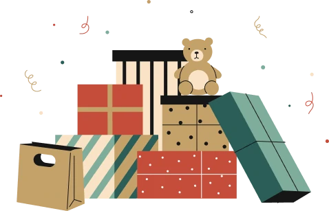

Feliz Natal
Uma plataforma de doação para espalhar alegria
Nessas festas de fim de ano mande um presente para a pessoa amada e compartilhe a alegria do Natal.
Tempo limitado
Nessas festas de fim de ano mande um presente para a pessoa amada e compartilhe a alegria do Natal.

Conectando generosidade ao redor do mundos
Celebre a magia do Natal de uma maneira especial! Descubra a plataforma que permite a doação de presentes significativos para aqueles que mais precisam. Faça parte do movimento e compartilhe o verdadeiro espírito da generosidade.